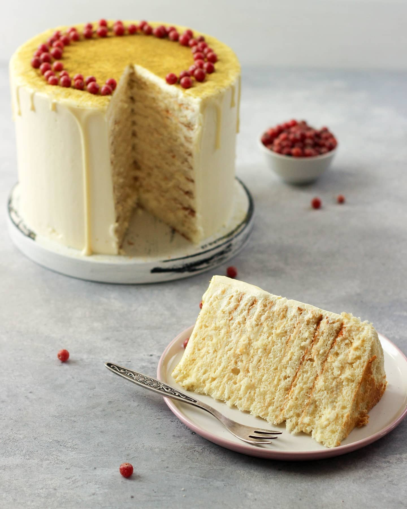

Home
Milchmadchen (milk girl) cake

Description
Want to impress your friends and family with a delicious homemade treat? Look no further! This creamy, dreamy cake combines rich flavors and light textures to create a dessert that's as irresistible as it is beautiful. Perfect for any occasion, this cake will have everyone asking for seconds!
Ingredients:
The cream:
- 200 grams (7.05 ounces) sour cream 25%
- 350 grams (12.35 ounces) whipping cream
- 200 grams (7.05 ounces) mascarpone
- 50 grams (1.76 ounces) powdered sugar
Cake layers:
- 2 large eggs
- 380 grams (13.4 ounces) condensed milk
- 200 grams (7.05 ounces) mascarpone
- 70 grams (2.47 ounces) butter
- 200 grams (7.05 ounces) flour
- 8 grams (0.28 ounces) baking powder
Steps:
- This recipe is scaled for a 16cm (6.3 inch) cake.
- Gather and chill all dairy products. Whip the sour cream, whipping cream, and powdered sugar until fluffy and lightly thickened. Add the mascarpone, then whip at low speed until the cream is completely homogeneous, without lumps of mascarpone. Be careful not to over-whip the mascarpone as it can easily turn grainy. Stop the mixer as soon as the mixture is smooth. Place the cream in the fridge until you are ready to assemble the cake.
- Whisk the eggs until the whites and yolks are combined. Add the condensed milk and melted butter, mixing until well combined. Sift in the flour and baking powder, then mix at low speed until the batter is smooth and consistent in texture.
- On a baking surface (parchment, Teflon, or silicone mat), spread the dough into an even circle with the right diameter. You may bake the layers slightly larger and trim them to the desired size later. Bake the cake layers in a preheated oven at 356°F (180°C) for 4-5 minutes, or until the edges turn golden. Layer the baked cakes with parchment paper between each to prevent sticking.
- Assemble the cake by layering each cake with the prepared cream. Allow the cake to soak and stabilize. Finally, cover the finished cake with your preferred buttercream. For a more professional finish, chill the cake after the initial assembly before applying the buttercream.